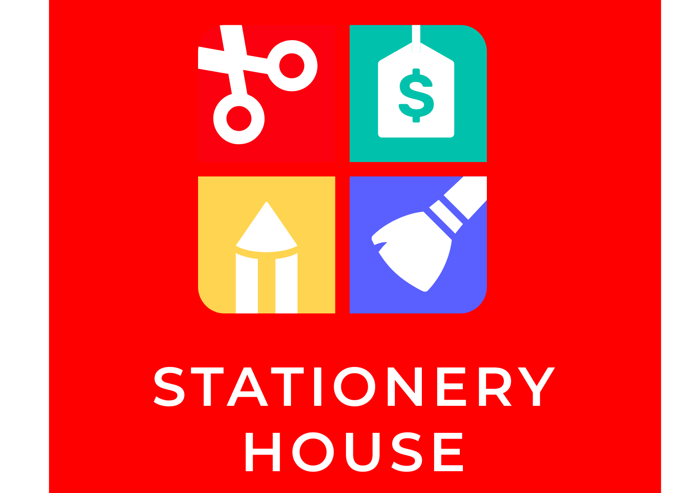

My Projects

Stationary Management System
A web-based application to manage stationery items, orders, and inventory.
View on GitHubDragon Knight
Game
A 3D game built with Unity where players can battle as a dragon knight.
View on GitHub